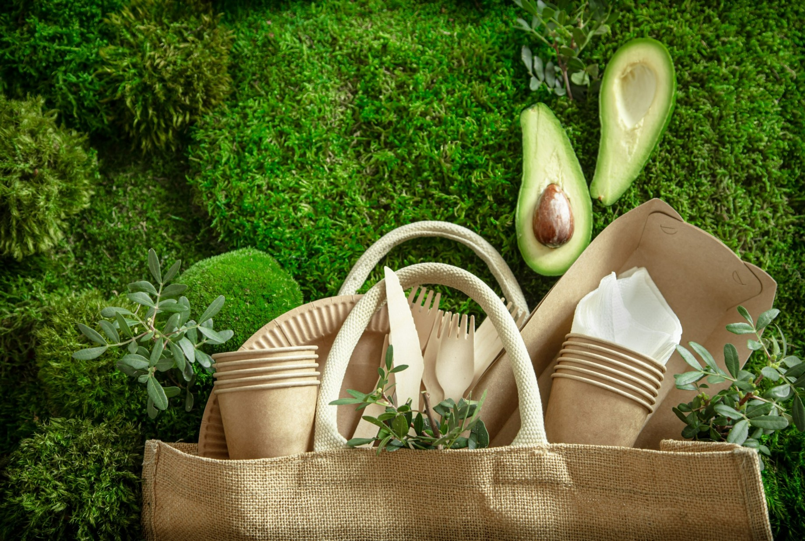
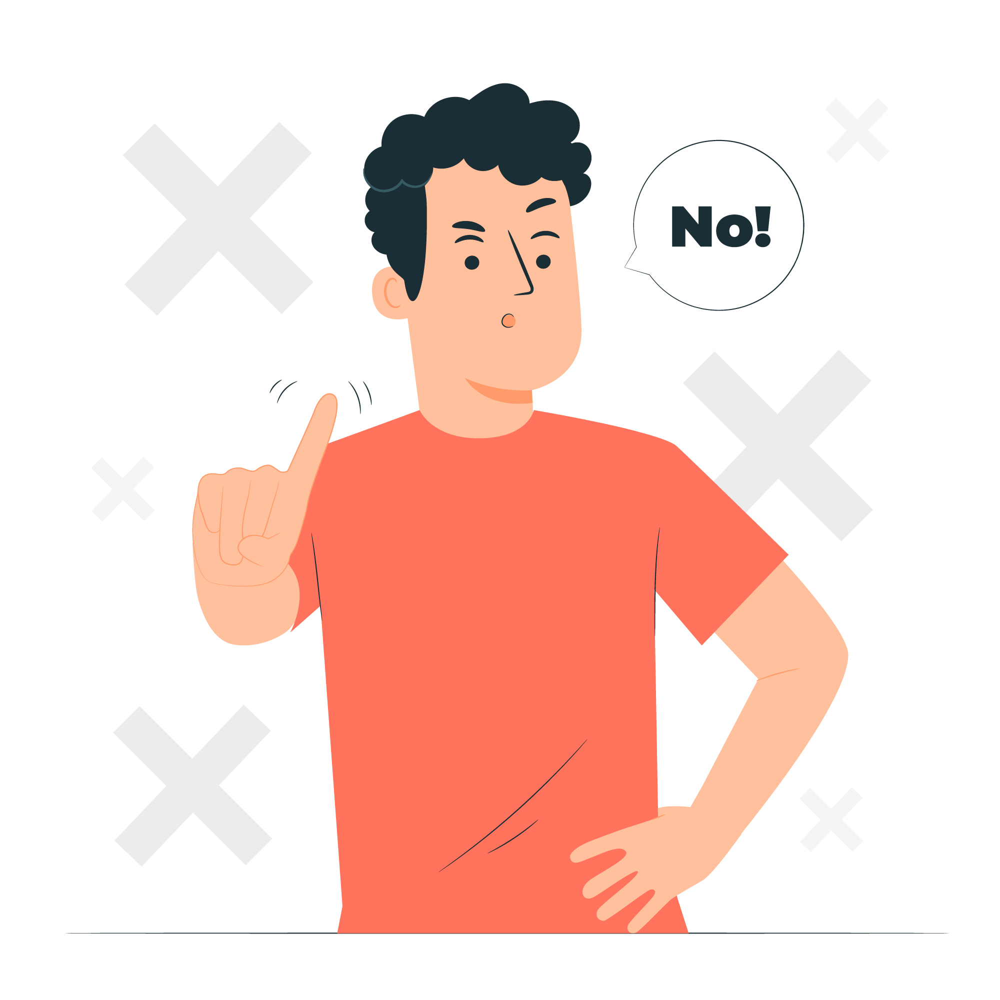
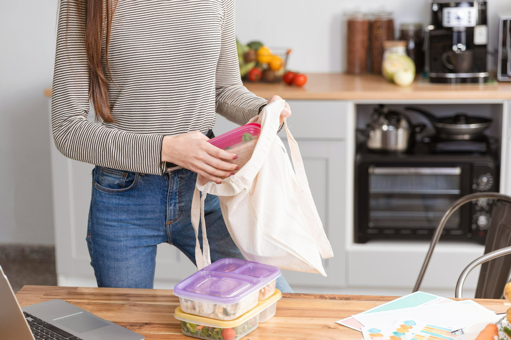
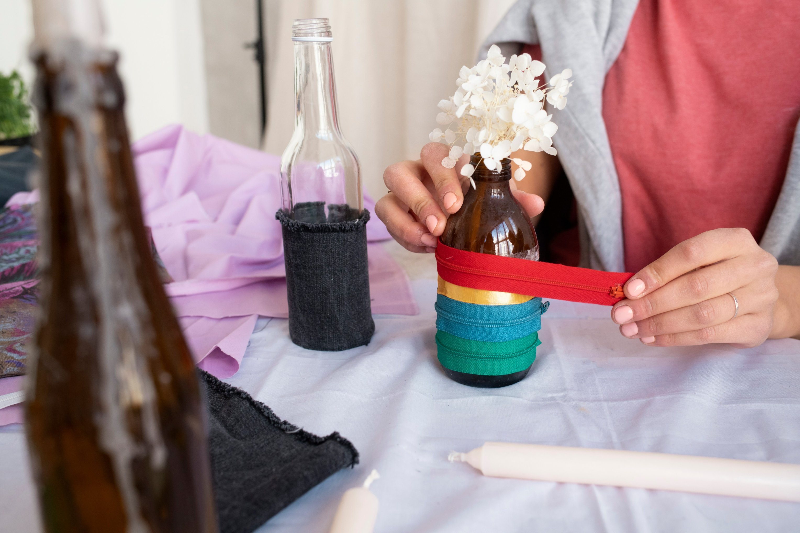
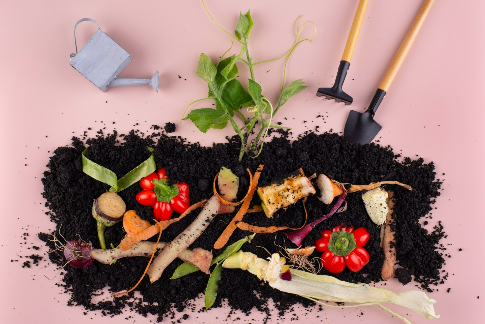
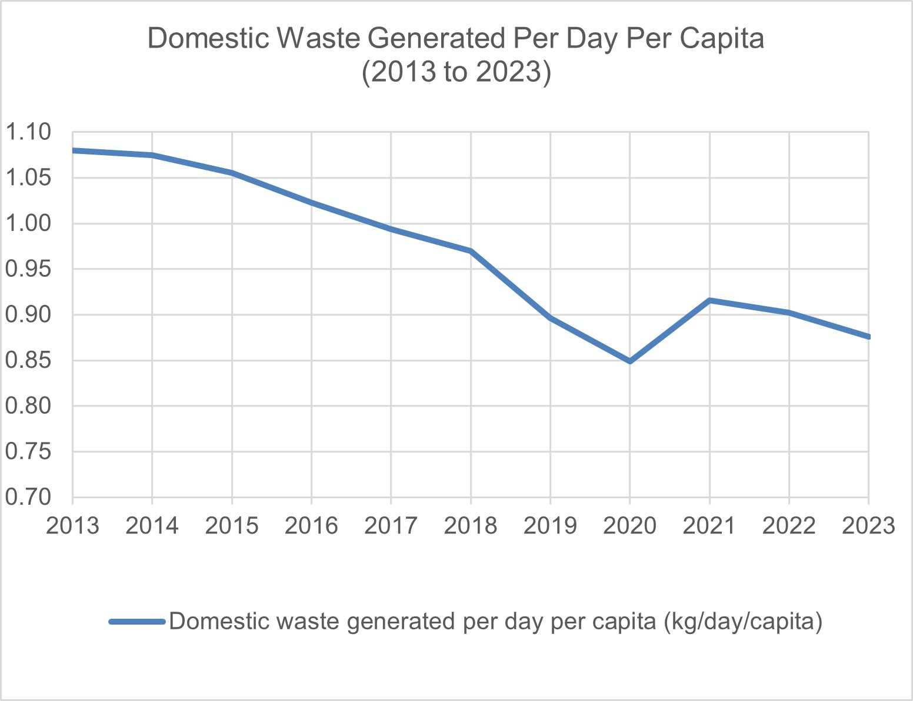
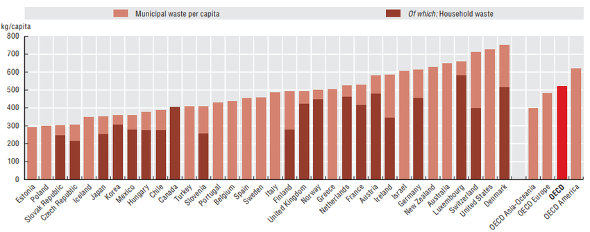

Zero-Waste Lifestyle
What are the Zero-Waste Principles?
The Zero-Waste Principles are: Refuse, Reduce, Reuse, Recycle, and Rot (Composting). Each of these practises helps us strive for a zero-waste lifestyle. We will explore each of these principles in more detail below.


What is Refusing?
Before taking any item, pause to think about whether it is something you genuinely need, how frequently it will be used, and if it can be responsibly discarded once it is no longer useful. Consider if the item has a meaningful function or if it’s likely to become trash that adds to landfill or incinerator waste. For instance, when shopping, you can opt out of plastic bags or other disposable products to help minimize avoidable waste.
What is Reducing?
Reducing is about minimizing waste by consuming less and using items more sustainably. This can include simple actions like switching to a reusable water bottle instead of buying disposable plastic ones. It also means avoiding impulse purchases and unnecessary upgrades. By choosing to consume less, we conserve resources, save money, and reduce clutter in our lives.


What is Reusing?
Reusing means giving items a second life by using them again and extending their lifespan. This can involve repairing, repurposing, or finding new uses for a product instead of throwing it away. For example, you can use reusable bags, bottles, and containers instead of single-use ones. Items you no longer need can also be sold or donated, helping others while maximizing the usefulness of each item.
What is Recycling?
Recycling involves recovering and processing materials from products that have reached the end of their life cycle, so they can be transformed into new items instead of ending up in landfills or incinerators.

What is Rotting (Composting)?
Rotting refers to composting food scraps and other biodegradable materials, turning them into nutrient-rich soil instead of sending them to landfills. This reduces waste, lowers greenhouse gas emissions, and helps improve soil health. Common compostable items include fruit peels, vegetable scraps, and coffee grounds.
How much garbage does the average person produce yearly?
Conclusion 1:
The amount of domestic waste per person per year has generally decreased over time.
In 2013, the average daily waste per person was around 1.08kg/day, which equals to about 394.2kg/year.
In 2023, this number dropped to around 0.87kg/day, which equals to about 317.6kg/year.
The average person in 2023 produced about 76.6kg less waste per year compared to 2013.
Conclusion 2:
The COVID-19 pandemic may have caused a temporary increase in waste.
From 2020 to 2021, there is a noticeable increase in waste per capita. The value dipped to ~0.85 kg/day, but rose again to ~0.91 kg/day in 2021.
One reason for this could be due to the increased use of disposable items (e.g. masks, packaging from deliveries) during lockdowns.

Conclusion 1:
Municipal waste per person varies widely across countries, likely due to different consumption habits, packaging use and waste management systems
For example, Estonia generates just over 300 kg per person per year, while Denmark produces nearly 800 kg per person per year.
Conclusion 2:
Household waste makes up a large portion of municipal waste.
This suggests that personal lifestyle choices can greatly impact national waste levels.
